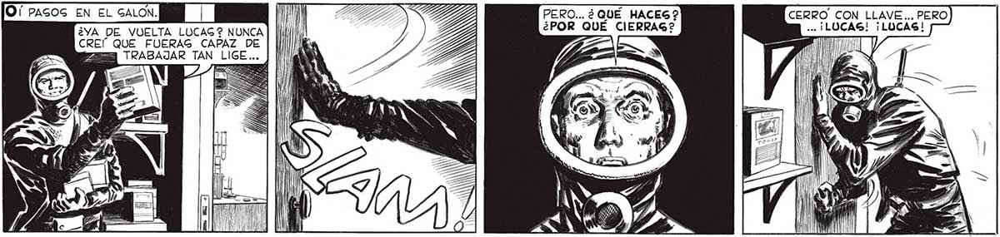
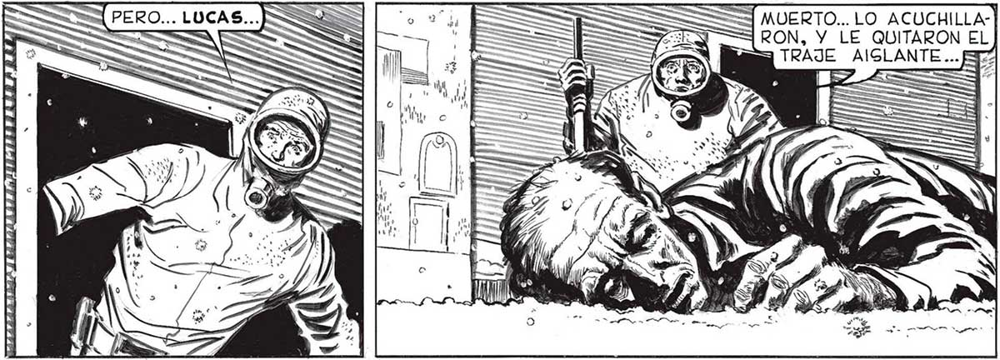

| AG PERO... ¿ QUÉ HACEG? CERRO CON LLAVE... PERO ¿VA DE VUELTA LUCAG? NUNCA] [ll | ¿POR QUE CIERRAG? .- ¡LUCA CREÍ QUE FUERAG CAPAZ DE pa E ; A TT == TRABAJAR TAN LI ANS : << ha ST SS IN ¡LUCAG! ¡LUCAS! ¡QUÉ PASA 2 ¡LUCAS! e N ¡ TENGO QUE SALIR CUANTO ANTES! NI "y No OBTUVE OTRA RESPUESTA QUE El /|| MFRAGOR DE UN CRISTAL QUE GE QUEBRABA.. ||| ANUAL =3 ES, na z + e se / pe. ú / BAN | 'l > úl ; 6 “dd 4 S /m S AN E, ON h N 2) l v AN IAE AR Mo a A L, O e 2 A ¿A UA A LEY DE LA JUNGLA.” ANA ES MATAR O MORIR... HABÍA E) e FIERAS SUELTAG EN TOR- y V NO NUEGTRO. FIERAG: HOMBRES. LAG MAG FEROCES DE TODAS... GUPE,COMO NUNCA, LO QUE EG EL MIEDO...

